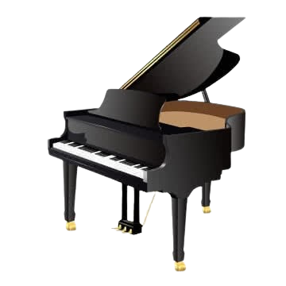

O melhor website de
instrumentos
Neste site estão disponíveis três tipos diferentes de instrumentos: guitarra, piano de cauda e bateria para iniciantes.
Neste site estão disponíveis três tipos diferentes de instrumentos: guitarra, piano de cauda e bateria para iniciantes.

Explore a vibração e a melodia das cordas. Da suavidade do violão à energia da guitarra elétrica, perfeitos para harmonias complexas e solos marcantes.

Sinta o ritmo e a pulsação. Conjuntos de bateria e percussão rítmica que definem a base e a energia de qualquer composição musical rítmica.

A elegância do piano de cauda e a versatilidade dos teclados modernos. Um universo de notas e possibilidades sonoras ao alcance dos seus dedos.

ana.livia.santos.lopes@gmail.com